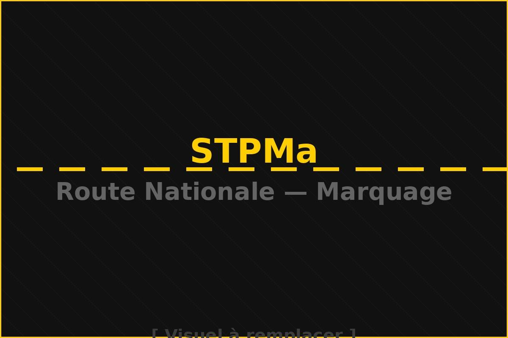
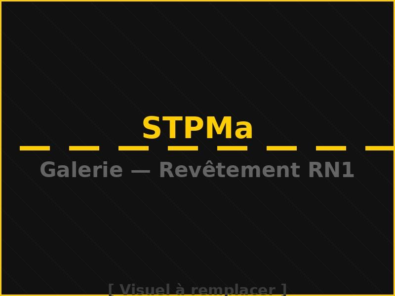
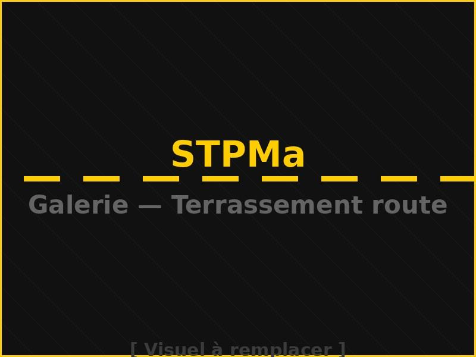
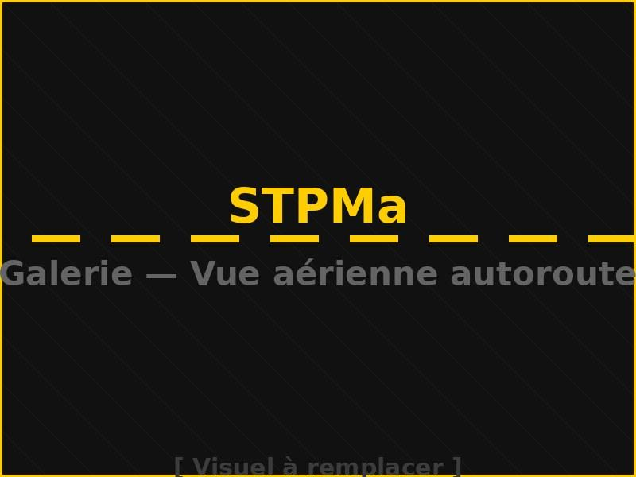
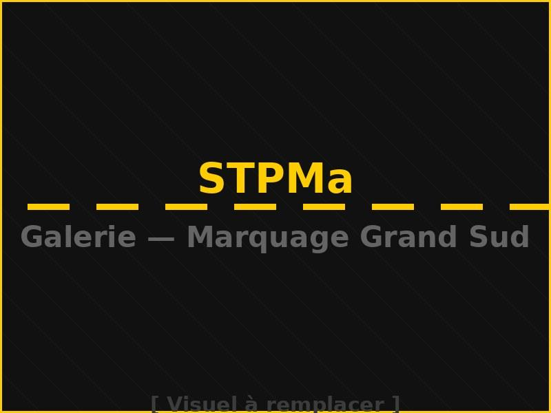
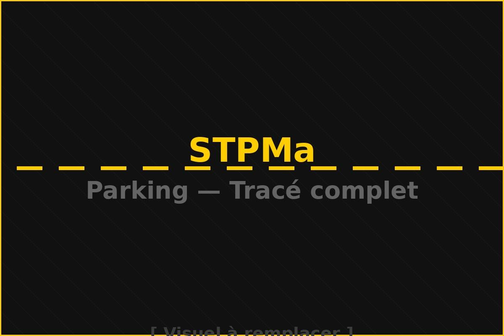
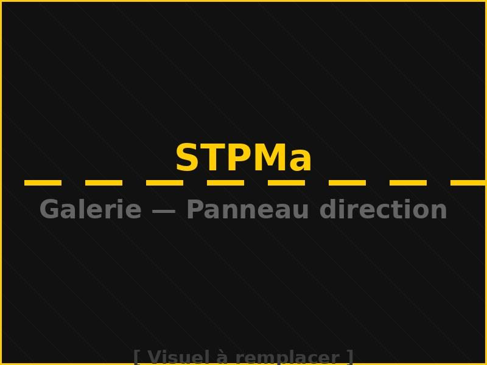
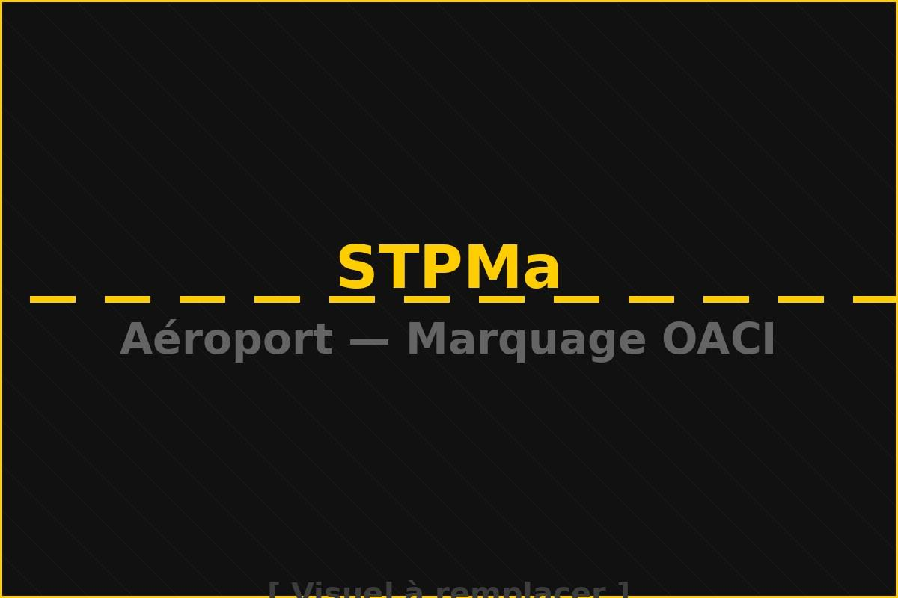

Références & Projets
Des chantiers qui
parlent pour nous.
Routes nationales, autoroutes, parkings, aéroports — STPMa intervient dans les 12 régions du Royaume avec la même exigence sur chaque kilomètre.
Routes nationales, autoroutes, parkings, aéroports — STPMa intervient dans les 12 régions du Royaume avec la même exigence sur chaque kilomètre.

★ Projet Phare · RNPlus de 500 km par giron (sens de circulation), soit plus de 1 000 km de marquage total. Lignes axiales, rive, passages piétons, flèches de sélection — réalisés sans interruption de la circulation avec 2 machines Airless HP.
Signalisation horizontale complète sur voie express double chaussée. Thermoplastique à chaud, guidage laser vert, rendement 28 km/jour.

Route Nationale · CentreRenouvellement complet sur l'axe le plus fréquenté du Maroc. Airless HP, double caméra, PLC — conformité totale NM 03.3.019.

Route Nationale · SudMarquage horizontal sur terrain montagneux — adaptation Airless aux températures élevées du Sud. Billes de verre classe R2 haute durabilité.

★ Siège STPMa · Drâa-TafilaletRégion d'ancrage de STPMa : routes nationales, provinciales et pistes rurales. Axes Errachidia–Ouarzazate et Errachidia–Fès.

Grand Sud · Provinces SahariennesIntervention dans les provinces sahariennes sur axes stratégiques. Peinture haute durabilité résistant chaleur extreme, sable et UV. Billes classe R3.

ParkingMarquage de places standard et PMR, zones de circulation et signalétique directionnelle en résine époxy haute résistance.

Parking CommercialÉtude de circulation, marquage au sol et pose de panneaux pour optimiser la rotation véhicules en zone à fort trafic commercial.

Aéroport · OACIApplication thermoplastique conforme aux normes aéronautiques internationales OACI. Voies de circulation, zones de stationnement avion, interventions de nuit.
De Tanger à Dakhla, STPMa mobilise ses équipes et équipements Airless sur tout le territoire national sous 72h.
Parlons de vos besoins en signalisation, marquage ou sécurité routière. Réponse sous 24h ouvrées.
Demander un devis → +212 6 64 84 55 58